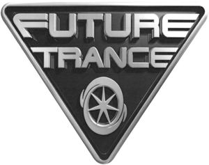

Trade Mark Journal No.2025/011 14 March 2025
WO0000001841947 (9,35,38,41)
Office of origin: Germany
Date of International Registration:21 June 2024
Date of designation in the UK:
21 June 2024

- Class 9
- Sound, image [to the extent included in this class] and data carriers of all kinds; recorded audio tapes, discs and cassettes, video tapes, discs and cassettes; digital audio and audio-video tapes and discs; CDs; DVDs; High Density Digital Versatile Disc [HD-DVD]; Blu-Ray Disc [BD]; laser discs and records with music and entertainment; theatre and music and video recordings; virtual reality game software; downloadable ringtones, music, MP3 files with music and entertainment, graphics, programmes, images in the field of music and music-related entertainment; videos in the field of music and music-related entertainment; video game software and video films for wireless communication devices; mobile app; downloadable music; computer games; computer software; computer game software, magnetic tapes and cassettes; downloadable software; game software; computer programs for games; interactive game software; video game software, magnetic tapes and cartridges; all of the foregoing in recorded and unrecorded form; software for blogs; media streaming software; streaming devices for digital media; music [downloadable]; rubber mats especially adapted for turntables; mouse pads [mouse mats]; downloadable electronic publications in the form of books, booklets, sheet music, periodicals, journals, handbooks, brochures, leaflets, pamphlets and circulars, all in the field of music and music-related entertainment; downloadable mobile applications for use in connection with accessing, downloading and streaming music, music-related entertainment and downloadable electronic publications in the field of music and music-related entertainment; music recordings.
- Class 35
- Playlist marketing, in particular advertising and sales promotion of playlists and related advice.
- Class 38
- Providing access to websites; remote transmission of information, including websites; digital and online communication services in the field of music and music-related entertainment; teletext services; streaming of data in the field of music; streaming of video material on the internet in the field of music and music-related entertainment; streaming of sound material on the internet; streaming of video, audio and television; streaming of sound and image material on the internet; streaming of sound and audiovisual material via a worldwide computer network; television streaming via the internet; communication by means of an online blog, video channels, online portals or other social media [channels]; communication services by electronic means via video channels and social media; online news transmission services in the field of music and music-related entertainment; online transmission of information in the field of music and music-related entertainment.
- Class 41
- Production of radio and television programmes; editing of television and radio programmes for third parties; music production and music publishing services; provision of on-line entertainment, namely the provision of non-downloadable audio and video recordings in the field of music and music-related entertainment; entertainment, namely the provision of non-downloadable on-line music and video recordings via a worldwide computer network; fan club services; club entertainment services; club operation [entertainment]; production and publication of third party educational materials in the field of music and entertainment; production and distribution of radio programmes; production of audio and sound recordings; production of records; music production for records; film and video production; production of films; production and distribution of cinema films; production and distribution of television programmes with access to several channels; entertainment in the form of continuous television programmes in the field of music and entertainment; entertainment, namely by means of a continuous music and entertainment show distributed via television, satellite, audio and video media; entertainment in the form of continuous radio programmes in the field of music; entertainment in the form of live concerts and performances by musicians and music groups; entertainment services, namely personal appearances by music groups, musicians and celebrities; entertainment services in the form of performances by musicians via the media of television, radio and audio and video recordings; entertainment services, namely performances by musical artists live and recorded for future distribution; educational and entertainment services, namely production and presentation of television shows, sporting events, fashion shows, game shows, music shows, award shows and comedy shows to live audiences that are broadcast live or recorded on tape for later broadcast; entertainment services by means of a website with non-downloadable music performances, music videos, related film clips, photographs and other multimedia material with music and entertainment; entertainment services, namely the provision of online reviews of music, musicians and music videos; entertainment services, namely the provision of non-downloadable music recordings, information in the field of music and commentaries and articles about music, all online via a worldwide computer network; entertainment, namely live, television and film performances by professional entertainers; organisation of entertainment exhibitions in the form of music festivals; entertainment services, namely the organisation of exhibitions and workshops in the fields of music and art; entertainment services relating to video channels, apps and playlists; organisation of exhibitions for entertainment purposes relating to music and art; organisation and staging of music events; publication of web magazines.
Universal Music GmbH
Representative: Frommer Rechtsanwalts PartG mbB, Beethovenstraße 12, 80336 München, GERMANY